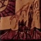
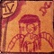

Introduction
Wars of Ressources, comme son nom l'indique, est tourné sur l'obtention,
la conservation et la gestion des ressources. Il y a 4 ressources dans
le jeu si l'on ne compte pas les
- les ressources Normales
- les ressources Spéciales
les Ressources
Normale : l'€
L'€ est une ressource que la possession de la plupart des territoires rapporte. Elle principalement à construire des bâtiments mais il est important de ne pas l'utiliser à tort et à travers; Le but du jeu est d'en avoir le plus possible à la fin.
Normale : l'^^
L'€ est une ressource que la possession de la plupart des territoires rapporte.
Elle sert principalement à recruter des
Spéciales : l'¤
L'¤ est une ressource qui s'obtient avec les bâtiments mine et Mine D. Elle sert principalement à utiliser les progrès et des Technomagie mais aussi à améliorer certains bâtiments.
Spéciales : l'£
L'£ est une ressource qui s'obtient avec les bâtiments temple et Temple D. Elle sert principalement à utiliser les Bénédictions et Malédictions et les Technomagie mais aussi à améliorer certains bâtiments.
Les Cartes
Introductions
Les Cartes sont des bonus que les joueurs peuvent
utiliser avec leurs ressources spéciales.
Ils peuvent en obtenir une de type Magique par tours dès qu'ils ont un revenu en £.
Idem pour les cartes de
type Technologique avec la ressource ¤.
Si un joueur a un revenu en £ et en ¤, il peut choisir de prendre une
carte
de type Technomagie
à la place d'une de type Technologique et d'une de type Magique.
Un même joueur ne peut conserver que 3
cartes
(plus les éventuels bonus) non utilisés en même temps.
S'il en a déjà le maximum et qu'il en veux une autre, il doit en défausser une.
Les joueurs piochent leurs cartes
pendant l'exploitation
Invocations : Mages

Les mages ont une force individuelle de
flux magiques: immunisé contre les effets négatifs
des blessures et des malédictions, flammes du dragon comprises.
Invocations : Dragon

Le dragon a une force de
flame: à la fin d'une bataille où il a participé,
même s'il a perdu ou s'il y est tué, il inflige une blessure à tous ses adversaires
Invocations : Clones

Les clones ont une force individuelle de
flux Technologique: immunisé contre les effets négatifs
des progrès et contre le poison du serpent.
Invocations : Paysant

Les paysans ont une force individuelle de
cultivateur: augmente les revenu du territoire où il se trouve de 1^^ ou de 1€ selon
la volontée du moment du joueur
Invocations : Chauve-Souris

Les chauve-souris ont une force individuelle de
monture: peut transporter une
Invocations : Serpent

Le serpent a une force de
poison: à la fin d'une bataille où il a participé,
même s'il a perdu ou s'il y est tué, il inflige 2 blessure
à n'importe lequel de ses adversaires.